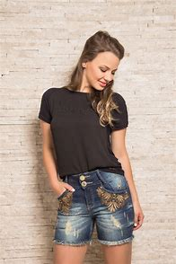
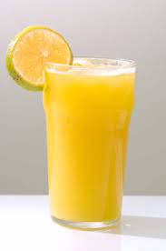

Objetos
1 - QUE ROUPA USAR NO DIA DO ENSAIO FOTOGRÁFICO?Estilos de roupas É importante escolher roupas confortáveis e que te deixem mais à vontade, além de mostrar sua personalidade, tomando cuidado para não chamar tanta atenção. É legal se questionar se a roupa escolhida vai continuar agradando daqui a 20 anos. Para o ensaio não ficar cansativo, o ideal é que você leve até 2 (dois) figurinos, a não ser em casos específicos. Recomendado: Roupas básicas de cor sólida. Cores claras são muito bem-vindas, pois dão um ar mais leve e harmônico em relação as composições que serão feitas no ensaio. Não recomendado: Roupas com bolinhas, estampas exageradas, listras, cores muito escuras, números ou palavras muito grandes. |
 |
2 - OBJETOS E ADEREÇOSSão os itens que podem ajudar suas fotos e que tem o potencial de dar-lhes um impacto extra. Se você possuir qualquer objeto que poderia ser legal em uma fotografia, pode considerar em levá-lo. Os clientes que fornecem seus próprios adereços tendem a trazer coisas que tem um significado muito maior do que aquilo que o fotógrafo poderia proporcionar. Além disso, ao usar repetidamente um mesmo acessório, o fotógrafo produziria fotos muito parecidas umas com as outras. Recomendado: Coroa de flores, o livro preferido, chapéu, guarda-chuva ou qualquer outro objeto de valor sentimental. A maquiagem deve ser corretiva e leve. A ideia é que você esteja linda, mas bem natural. Para os cabelos, é recomendado que estejam preferencialmente soltos (para dar mais movimento nas fotos), mas isto também não é uma regra. |
|
3 - ITENS PARA MUDAR SUA APARÊNCIA (MAQUIAGEM, CABELO E UNHAS)E para as unhas, o ideal é que estejam limpas e bem cuidadas, já que as câmeras profissionais têm o poder de capturar os mínimos detalhes com tremenda nitidez. Afinal, você não vai querer perder uma bela foto close-up com as mãos tocando o rosto por conta de uma unha descascando ou malfeita não é mesmo? Também é interessante se questionar se o esmalte estará em harmonia com os figurinos escolhidos. |
|
4 - ITENS ADICIONAIS A CONSIDERARDependendo da duração do ensaio fotográfico você poderá levar uma refeição leve ou um lanche. Evite levar qualquer coisa que possa manchar os dentes. Isso inclui itens achocolatados. Você também poderá levar bebidas como: Água, sucos ou qualquer outra que desejar para se hidratar ou se refrescar durante o ensaio. A pontualidade também é fundamental para que tudo aconteça como planejado. |
 |
  |
Desenvolvido por Heitor e Davi Av. Principe Mikasa, 5000 |
E-mail: heitorcvsantos@gmail.com Tel.: (11) 97151-1049 |